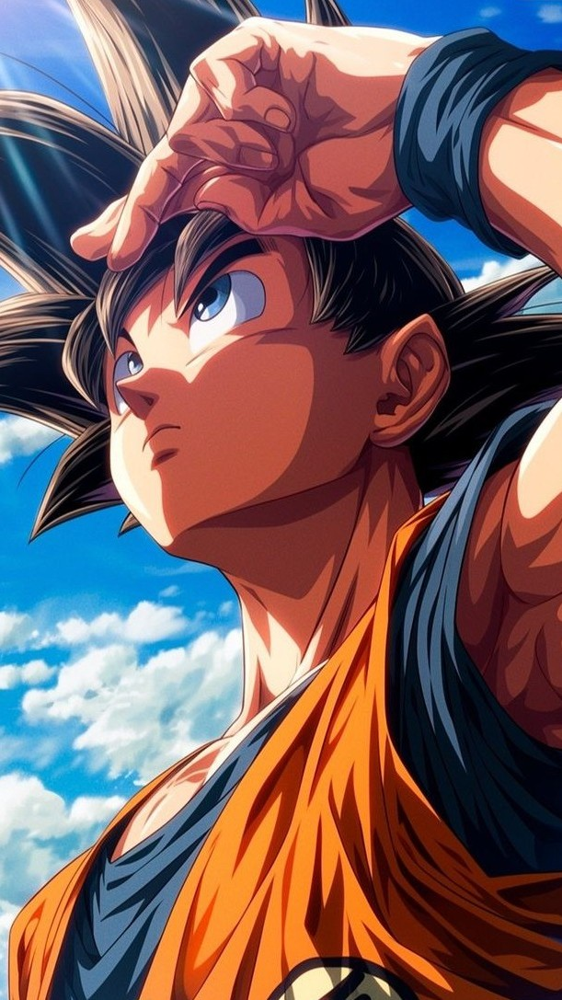

About Dragon Ball
Dragon Ball is a popular Japanese anime and manga series created by Akira Toriyama. It follows the adventures of Goku, a powerful martial artist with a mysterious origin, as he trains to become stronger, gathers magical Dragon Balls that summon a wish-granting dragon, and defends Earth from various powerful enemies. The series blends action, comedy, and fantasy, and has become one of the most influential anime franchises worldwide.
|
Son Goku

Goku is the main protagonist of the Dragon Ball series. He is a kind-hearted, fearless warrior known for his love of fighting strong opponents and constantly pushing his limits.
Originally born as Kakarot, a member of the alien Saiyan race, Goku was sent to Earth as a baby. A head injury altered his nature, turning him from a destructive warrior into a pure-hearted hero. Raised by Grandpa Gohan, he grows up to become Earth's strongest defender.
Goku is famous for his signature attacks like the Kamehameha, his ability to transform into powerful forms like Super Saiyan, and his endless determination to protect his friends and the planet—even if it means risking his life. His cheerful, naive personality and tireless spirit have made him one of the most iconic characters in anime history.
|
|
Prince Vegeta
Vegeta is one of the most iconic characters in the Dragon Ball series. He is the Prince of the Saiyan race, originally introduced as a ruthless villain, but later becomes one of the series' greatest heroes and Goku’s lifelong rival.
Vegeta is proud, fiercely competitive, and obsessed with becoming stronger—especially surpassing Goku. Despite his harsh and arrogant exterior, he has undergone tremendous character development, showing loyalty, love for his family (Bulma, Trunks, and later Bulla), and even sacrificing himself for the greater good.
Known for his powerful techniques like the Galick Gun and Final Flash, Vegeta is a tactical, relentless fighter. His journey from a merciless warrior to a proud protector of Earth makes him one of the most complex and admired characters in Dragon Ball.
|
Why you should watch Dragon Ball
People should watch Dragon Ball because it’s more than just action—it’s an epic story of growth, friendship, and perseverance. Here’s why it stands out:
- Inspiring Characters: Goku’s relentless drive to improve and Vegeta’s powerful character arc show the value of hard work, humility, and redemption.
- Epic Battles: Dragon Ball is famous for its intense, creative fight scenes and transformations like Super Saiyan, which have become legendary in pop culture.
- Adventure & Humor: The early episodes are full of fun, exploration, and comedy, while later arcs dive into deeper themes and higher-stakes action.
- Timeless Legacy: It’s a cornerstone of anime that has inspired countless shows and fans around the world.
- Emotional Depth: Behind the action are meaningful stories of sacrifice, family, rivalry, and hope.
Whether you’re new to anime or a long-time fan, Dragon Ball delivers unforgettable moments and a sense of wonder that keeps you coming back.
|